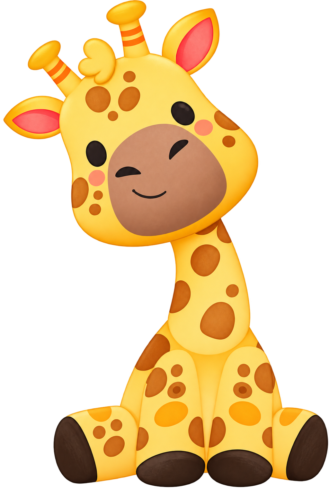

Liri
Liri
Liri
Liri
Uma equipe dedicada a modernizar a fonoaudiologia, tornando o tratamento mais acessível, eficaz e humano.
O Liri foi desenvolvido como parte do Trabalho de Conclusão de Curso (TCC) do curso de Sistemas de Informação da FHO | Fundação Hermínio Ometto, em Araras-SP, com conclusão prevista para 2026.
O projeto surgiu a partir da iniciativa de um grupo de estudantes em desenvolver uma solução tecnológica voltada ao apoio do tratamento fonoaudiológico infantil, especialmente na realização de exercícios no ambiente domiciliar.
Durante o desenvolvimento, identificou-se a necessidade de auxiliar na continuidade das práticas fora do consultório. Assim, o Liri foi idealizado como uma ferramenta de apoio ao trabalho do profissional, contribuindo para o acompanhamento e incentivo das atividades realizadas pela criança.
Princípios que orientam o desenvolvimento do Liri na integração entre tecnologia, saúde e educação.
Compromisso com a qualidade no desenvolvimento de soluções tecnológicas aplicadas à fonoaudiologia.
Desenvolvimento centrado nas necessidades da criança e no suporte ao profissional de saúde.
Uso de tecnologias como reconhecimento de voz para aprimorar o processo terapêutico.
Foco na evolução do paciente por meio de acompanhamento contínuo e dados de desempenho.
Alinhado ao ODS 4, o Liri promove práticas educativas inclusivas e acessíveis, apoiando o desenvolvimento da comunicação infantil.
Facilita o acesso ao acompanhamento fonoaudiológico fora do ambiente clínico, ampliando o alcance do tratamento.
A girafa é o animal com o pescoço mais longo do reino animal ela precisa se esticar, pouco a pouco, para alcançar as folhas mais altas. Da mesma forma, o desenvolvimento da fala de uma criança acontece em pequenos avanços: um som, uma sílaba, uma palavra de cada vez, até alcançar a comunicação plena.
Por isso, a Liri foi criada como uma companheira gentil e paciente, que acompanha cada criança de perto celebrando as pequenas conquistas do dia a dia, assim como uma girafa observa e cuida do seu grupo, sempre com um olhar atento e carinhoso.

Você sabia? Girafas também se comunicam por sons de frequência muito baixa, quase inaudíveis para nós — assim como cada criança tem seu próprio ritmo e forma de se expressar.